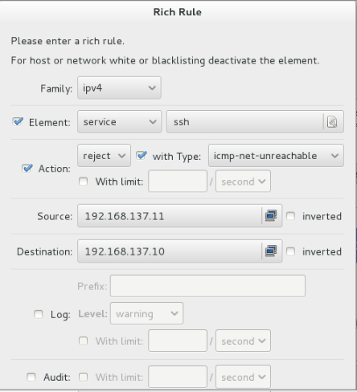

防火墙的作用
防火墙是一个组件，工作在网络边缘（主机边缘），对进出网络数据包基于一定的规则检查，并在匹配某规则时由规则定义的处理进行处理的一组功能的组件。
防火墙类型
根据工作的层次的不同来划分，常见的防火墙工作在OSI第三层，即网络层防火墙，工作在OSI第七层的称为应用层防火墙，或者代理服务器（代理网关）。
网络层防火墙又称包过滤防火墙，在网络层对数据包进行选择，选择的依据是系统内设置的过滤逻辑，通过检查数据流中每个数据的源地址，目的地址，所用端口号和协议状态等因素来确定是否允许该数据包的通过，以及数据包的流向等。
还可以分为硬件防火墙和软件防火墙
软件防火墙
- EL6上的防火墙叫做iptables。
- EL7上的防火墙叫做firewalld。
iptables语法
iptables -t table CMD chain rule-matcher -j target
表 动作 链 规则匹配 执行操作
表table
使用 -t 来指定表,如果省略,则代表对 filter 表进行操作
- filter 表:用于过滤数据包
- nat 表:用于修改数据包的来源和目的地
- mangle 表:用户修改数据包的生存周期等等
- raw 表:跟踪机制
CMD动作
- A 追加
- I 插入
- D 删除
- L 罗列
- F 清空
表当中包含链chain
链是用来区分数据包的流向状态
- INPUT 入站的数据包
- OUTPUT 出站的数据包
- PREROUTING 路由判断之前的数据包
- POSTROUTING 路由判断之后的数据包
- FORWARD 第一次路由判断之后,到最后一词路由判断之前
规则rule
是用来判断数据包的具体情况
- -p 协议
- -s 来源
- -d 目的地
- —sport 来源端口
- —dport 目的端口
- -i 入站网络接口
- -o 出站网络接口
- ! 取反
执行操作target
- ACCEPT 接受
- DROP 丢弃
- REJECT 拒绝
- DNAT 目标地址转换
- SNAT 源地址转换
应用实例
- 查看规则
iptables -L - 规则清空
iptables -F - 预选策略
iptables -P INPUT ACCEPT - 保存策略
service iptables saveoriptables-save > /etc/sysconfig/iptables - 开机后重新导入
iptables-restore < /etc/sysconfig/iptables
只允许172.25.0.250和你自己的服务器能够访问ftp服务（rhel6）
iptables -A INPUT -s 172.25.0.250 -p tcp --dport 21 -j ACCEPT |
禁止ping包
iptables -A INPUT -p icmp -j DROP |
仅允许172.25.0.0/24网段和172.25.15.0/24网段用户能够访问我的邮件服务器
iptables -A INPUT -s 172.25.0.0/24 -p tcp --dport 25 -j ACCEPT |
课堂练习题目
rhel6 172.25.x.11
- 清空规则
- 预设filter表INPUT是ACCEPT
仅允许172.25.254.250和172.25.254.X 能够ssh到我的服务器（rhel6 172.25.X.11）上
iptables -A INPUT -s 172.25.254.250 -p tcp --dport 22 -j ACCEPT
iptables -A INPUT -s 172.25.254.16 -p tcp --dport 22 -j ACCEPT
iptables -A INPUT -p tcp --dport 22 -j DROP仅允许172.25.254.0/24和172.25.X.0/24能够ping我的服务器
iptables -A INPUT -s 172.25.254.0/24 -p icmp -j ACCEPT
iptables -A INPUT -s 172.25.16.0/24 -p icmp -j ACCEPT
iptables -A INPUT -p icpm -j DROP不允许172.25.254.254访问我的邮件服务器
iptables -A INPUT -s 172.25.254.254 -p tcp --dport 25 -j DROP
保存规则
rhel6
servcie iptables save
iptables-save > /etc/sysconfig/iptables查看规则
iptables -L
关机重启
iptables-restore < /etc/sysconfig/iptables
Firewalld的用法
Firewalld是el7默认的防火墙，和iptables冲突，如果要使用其中之一，需要关闭另外一个
运行、停止、禁用firewalld:
- 启动：
systemctl start firewalld - 查看状态：
systemctl status firewalld或者firewall-cmd --state - 停止：
systemctl disable firewalld - 禁用：
systemctl stop firewalld
可以通过
- firewall-config图形化工具 来控制
- firewall-cmd 命令行工具
Firewall-config
- Configuration runtime和permanent 分别是运行时和永久
- zone 默认区域配置
- Trusted：允许所有传入数据包
- drop：默认丢弃所有包
- block：拒绝所有外部连接，允许内部发起的连接
- public：指定外部连接可以进入
- external：这个不太明白，功能上和上面相同，允许指定的外部连接
- dmz：和硬件防火墙一样，受限制的公共连接可以进入
- work：工作区，概念和workgoup一样，也是指定的外部连接允许
- home：类似家庭组
- internal：信任所有连接
- 富规则：可用于表达基本的允许和拒绝规则。
Configuration permenent

左上角：Option reloade firewall
Ssh就无法登陆了
firewall-cmd
firewall-cmd --permanent --zone=public --add-rich-rule=\'rule family=ipv4 service name="ssh" source address=192.168.137.11 log prefix="ssh" level="notice" limit value="3/m" reject\' |
将来自于192.168.137.11的ssh拒绝掉，并且将notice以上的日志写入到ssh日志当中，限制每分钟最多三条记录。